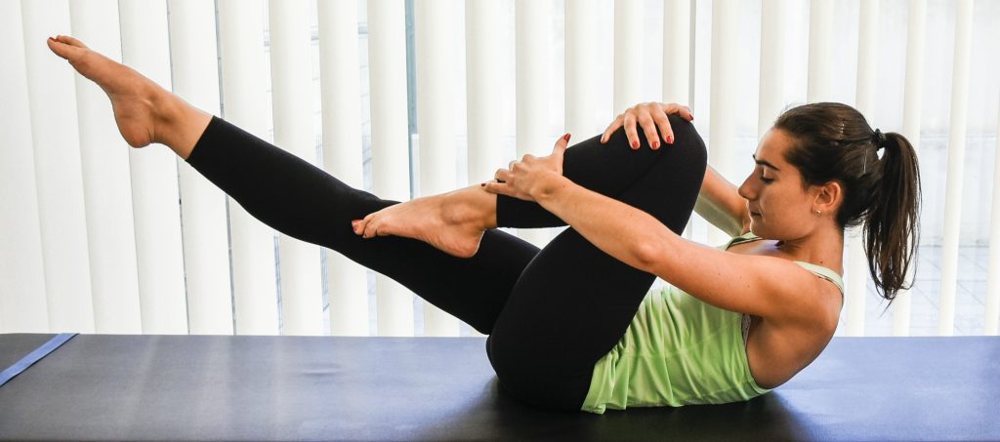
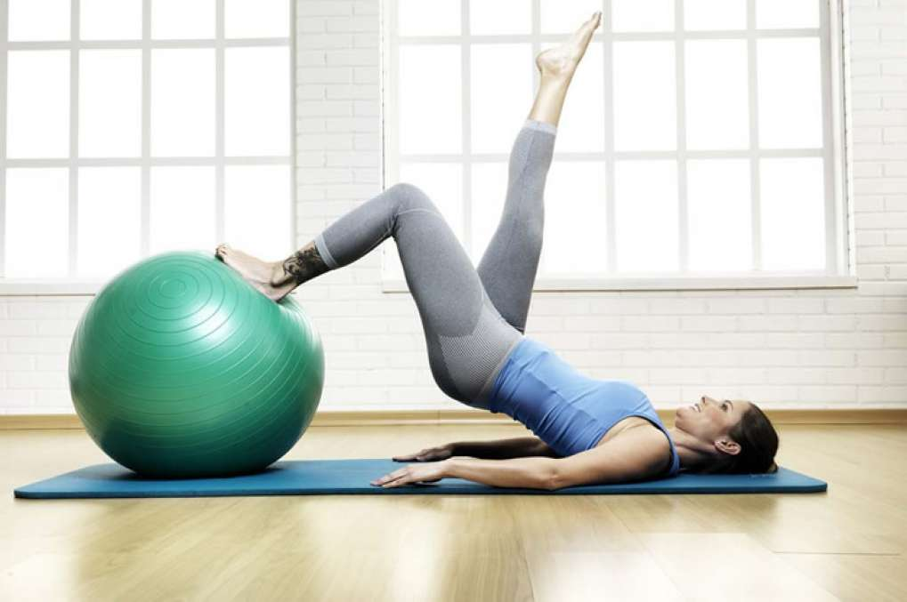
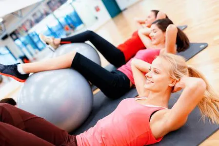
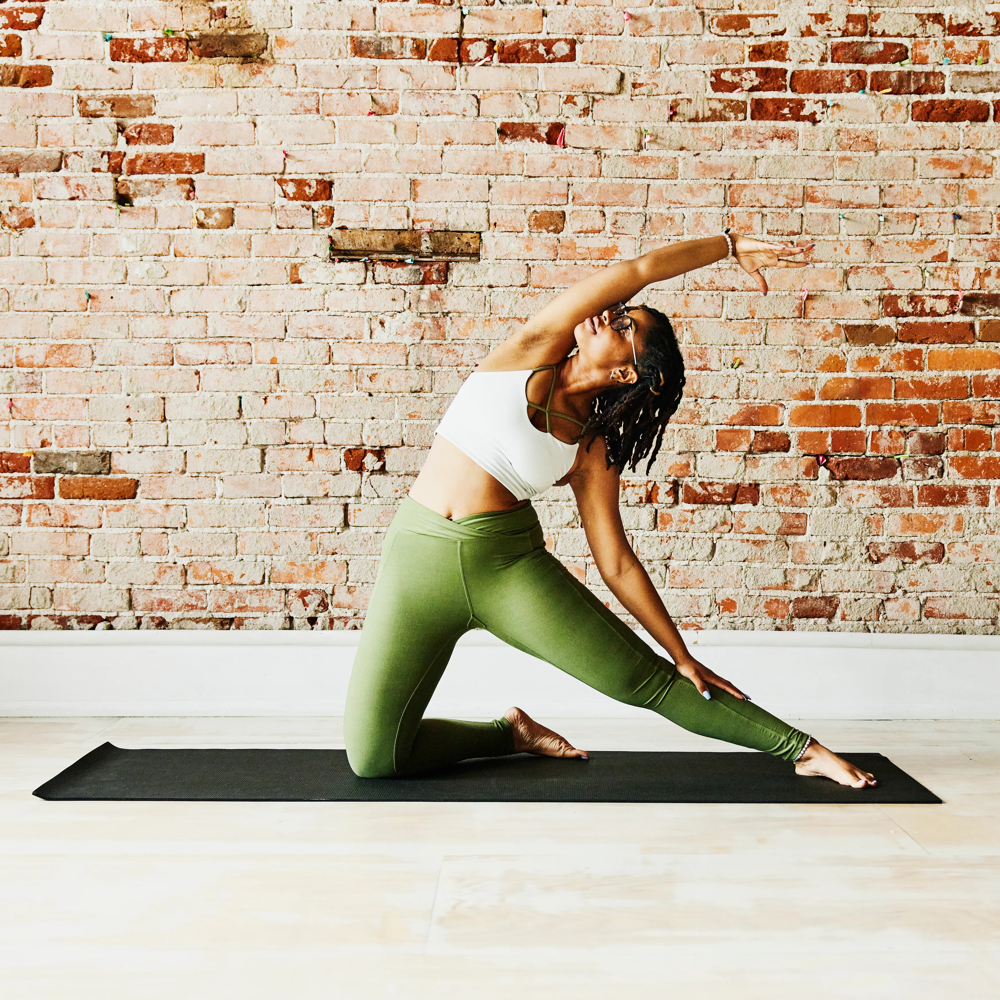

O movimento é: ao expirar vamos flexionar e elevar o tronco, mantendo as escápulas estabilizadas e contraindo os abdominais. Os braços serão elevados do colchonete até a altura dos ombros, e as pernas serão estendidas o mais baixo possível (sem compensar na coluna lombar).

A prática foi criada por um médico alemão, chamado Joseph Pilates, com o objetivo de ajudar soldados que sofreram lesões na guerra e reabilitá-los. Hoje, é utilizada como forte aliada para todos os grupos da população. Para mostrarmos os benefícios do Pilates, convidamos a especialista Carla Giuliano de Sá Pinto Montenegro, profissional de Educação Física Sênior do Centro de Reabilitação do Hospital Israelita Albert Einstein, para tirar as nossas dúvidas. Vamos saber mais? Então, boa leitura!
Ter o hábito diário de cuidado pessoal não precisa e nem deve ter uma idade mínima, pelo contrário, quanto antes começar melhor. Todo esse tempo de dedicação vai fazer com que o passar do tempo seja mais generoso com você e com seu corpo. E, assim, a tendência é que procedimentos muito invasivos não sejam necessários, apenas cuidados por profissionais aos finais de semana. Sem contar que tirar um tempinho para si mesma e sentir-se poderosa é muito bom!
1. Reduz o estresse
Uma das principais vantagens do Pilates é a sua capacidade de reduzir o estresse. Como sabemos, viver uma vida estressante é algo extremamente negativo para a sua saúde, tanto física quanto mental. A prática da atividade ajuda a amenizar essa situação.
2. Melhora a postura
Se você tem problemas de postura, não se sinta sozinho. Essa é uma situação enfrentada por muitas pessoas e que pode ser ajustada com a prática do Pilates. A atividade ajuda no fortalecimento muscular e, consequentemente, no alinhamento postural daqueles que o praticam.
3. Ajuda na respiração
Embora respirar seja algo involuntário, a verdade é que boa parte de nós não sabe como fazer isso da forma correta. Assim, podemos nos sentir cansados e ter sintomas como dores de cabeça. A prática do Pilates ajuda na consciência corporal e aprendizado da respiração adequada.
  